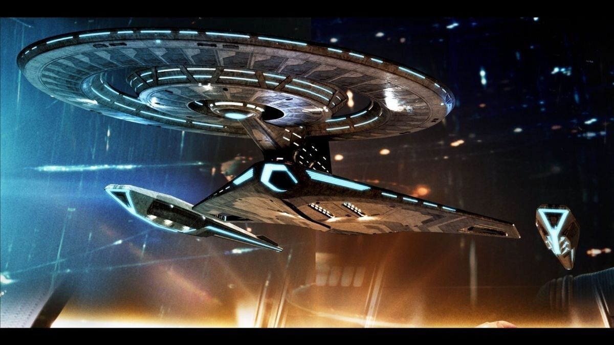

I am a Trekker!
I was introduced to Star Trek when I was 12 and ever since then I have loved it. Also, Trekkie or Trekker are what we Star Trek fans call ourselves.
Here's a picture of the USS Discovery from the TV show titled Star Trek Discovery
This ship is a Crossfield class science vessel capable of travelling at speeds of almost Warp 8
